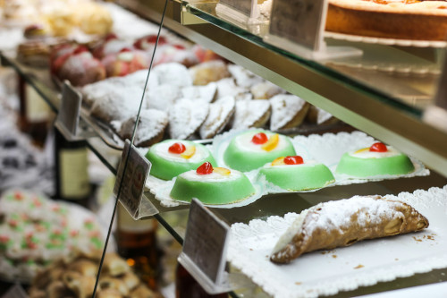

How to prepare Cassata
Lets start:

Ingredients:
- For the sponge cake (Pan di Spagna):
- 6 eggs
- 180 g sugar
- 180 g all-purpose flour
- Zest of 1 lemon or vanilla
- Pinch of salt
- For the ricotta cream:
- 700 g sheep’s milk ricotta (very well drained)
- 250 g powdered sugar
- 100 g dark chocolate chips or chopped chocolate
- Optional: candied orange peel, vanilla
- For the marzipan (pasta reale):
- 200 g almond flour
- 200 g powdered sugar
- ~40 ml water
- Green food coloring (traditional)
- For decoration:
- Candied fruit (cherries, citrus peel, etc.)
- Optional: icing sugar or a sugar glaze
- For Assemble:
- Liqueur or sugar syrup (to moisten the sponge)
- Apricot jam (optional, for glazing)